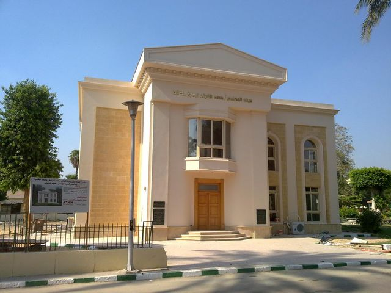

Abo Dabbab Marine Field Station
Education project · Marsa Alam, Egypt
Design of the LEED Platinum Abo Dabbab marine field station at Marsa Alam, Egypt, for HEPCA.
Marsa Alam: Marsa Alam is a relatively recently built town; its development began in 1995 through the investments of the Kuwaiti Al-Kharafi Group, which established the town and its initial facilities, resorts and infrastructure. Source
Partners
PUD
Client

More from Marsa Alam
2025Port Ghalib Master PlanMarsa Alam · 2025 Three Tunnels under the Suez CanalPort Said (Suez Canal) · 2015
Three Tunnels under the Suez CanalPort Said (Suez Canal) · 2015

Urban Renewal of the Faculty of Agriculture, Cairo UniversityGiza (Cairo University) · 20102009Master Plan of the Faculty of Agriculture Campus, Cairo UniversityGiza (Cairo University) · 20092009Students' Affairs Complex, Faculty of Agriculture, Cairo UniversityGiza (Cairo University) · 20092011Regional Vision for the North Coast and Tourism Development Master Plan for Fuka-MatrouhFuka-Matrouh sub-region, North Coast · 2011Three Tunnels under the Suez CanalPort Said (Suez Canal) · 2015